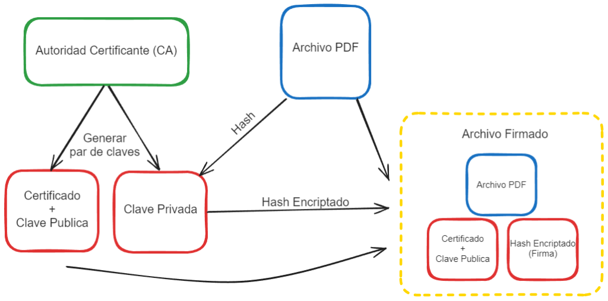
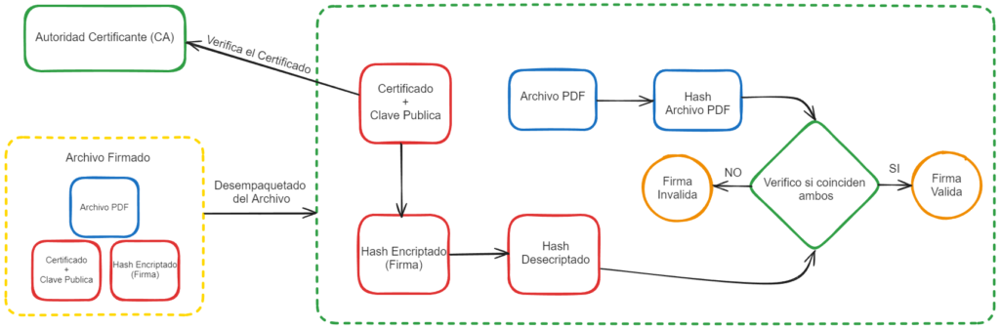

Introducción
En el vertiginoso panorama tecnológico actual, donde la información fluye a través de redes digitales, la seguridad y autenticidad de los documentos se han convertido en aspectos cruciales. En este contexto, la firma digital se erige como un pilar fundamental en la protección de la integridad de la información, proporcionando un medio seguro y eficiente para validar la identidad de los participantes en una transacción digital y garantizar la no manipulación de documentos.
Este artículo se sumerge en las complejidades técnicas de la firma digital, explorando no solo su definición superficial sino también desentrañando los entresijos de su creación, validación y el papel vital de las Autoridades de Certificación (CA). En un mundo donde la confianza es un bien preciado, comprender a fondo cómo funciona la firma digital no solo es una tarea para expertos en seguridad informática, sino una necesidad para cualquier entidad o individuo que busque asegurar la legitimidad de sus transacciones electrónicas.
A medida que avanzamos, nos sumergiremos en la criptografía asimétrica, los procesos detallados de generación de claves y la infraestructura de clave pública (PKI), proporcionando a nuestros lectores una visión holística y técnica que les capacitará para implementar firmas digitales de manera efectiva. Al finalizar este recorrido técnico, no solo entenderán cómo se crea y valida una firma digital, sino que también apreciarán el papel esencial de las CA en la construcción y mantenimiento de un ecosistema de confianza en el mundo digital. ¡Bienvenidos a la profundidad técnica de la firma digital!
Fundamentos de la Firma Digital
En el núcleo de la revolución digital, los fundamentos de la firma digital descansan sobre la criptografía asimétrica, una rama especializada de la criptografía que utiliza un par de claves: una clave privada y una clave pública. Este enfoque se diferencia significativamente de los métodos tradicionales de firma, como la escritura a mano, al basarse en principios matemáticos que proporcionan un gran nivel de seguridad y autenticación.
- Criptografía Asimétrica:
- Definición: La criptografía asimétrica, también conocida como criptografía de clave pública, implica el uso de dos claves matemáticamente relacionadas pero funcionalmente distintas: la clave privada y la clave pública.
- Funcionamiento: Cuando un documento se firma digitalmente, la clave privada del firmante se utiliza para generar una firma única. La clave pública correspondiente, compartida con cualquier persona interesada en verificar la firma, permite la validación de la firma sin revelar la clave privada.
- Generación del Par de Claves:
- Clave Privada: Esta clave, conocida solo por el titular, se utiliza para firmar digitalmente documentos. Su confidencialidad es crucial para mantener la integridad del sistema.
- Clave Pública: Relacionada matemáticamente con la clave privada, se comparte abiertamente. Se utiliza para verificar la autenticidad de una firma digital. La seguridad radica en la imposibilidad práctica de derivar la clave privada a partir de la clave pública.
- Algoritmos de Firma Digital:
- RSA (Rivest-Shamir-Adleman): Un algoritmo ampliamente utilizado que se basa en la dificultad de descomponer grandes números en sus factores primos.
- DSA (Digital Signature Algorithm): Especificado por el NIST, se centra en la generación de números aleatorios para garantizar la seguridad de las firmas digitales.
Estos fundamentos técnicos no solo proporcionan un medio seguro para la creación de firmas digitales, sino que también establecen las bases para comprender la seguridad inherente en el sistema. En la siguiente sección, exploraremos el proceso detallado de creación de una firma digital, desglosando los pasos precisos que permiten a los usuarios autenticar sus documentos de manera confiable en el mundo digital.
Creación de Firma Digital
La creación de una firma digital es un proceso intrincado que involucra el uso de la clave privada del firmante y la aplicación de algoritmos criptográficos específicos. Aquí desglosaremos los pasos esenciales para generar una firma digital de manera segura:
- Generación del Par de Claves:
- Antes de abordar la creación de una firma digital, es imperativo generar un par de claves única para el firmante. Este par consta de una clave privada, guardada de manera segura y conocida solo por el titular, y una clave pública, que se comparte abiertamente.
- Selección del Documento a Firmar:
- El usuario elige el documento que desea firmar digitalmente. Puede tratarse de un contrato, un archivo PDF o cualquier otro tipo de documento digital.
- Hashing del Documento:
- Se aplica una función de resumen criptográfico al documento seleccionado. Este proceso, conocido como “hashing”, genera una cadena de caracteres única e irreversible que actúa como una especie de huella digital del documento.
- Firma con la Clave Privada:
- Utilizando la clave privada del firmante, se firma digitalmente el valor hash del documento. La aplicación de la clave privada a este valor produce la firma digital única asociada al documento específico.
- Inclusión de la Firma en el Documento:
- La firma digital generada se incorpora al documento original. Esto puede lograrse de varias maneras, como la creación de un archivo de firma adjunto al documento o la incrustación directa de la firma en el contenido del documento.
- Distribución del Documento Firmado:
- Una vez completado el proceso de firma, el documento firmado digitalmente puede distribuirse electrónicamente. La integridad y autenticidad de la firma digital permiten a los destinatarios verificar la procedencia y la no alteración del documento.

Es crucial destacar que el secreto de la clave privada es esencial para mantener la seguridad del sistema. La pérdida o compromiso de la clave privada podría comprometer la autenticidad de las firmas digitales realizadas con esa clave.
En la siguiente sección, nos sumergiremos en el proceso de validación de una firma digital, explicando cómo las partes interesadas pueden verificar la autenticidad del documento firmado y la legitimidad del firmante.
Validación de Firma Digital
La validación de una firma digital es un proceso crítico que garantiza la autenticidad e integridad del documento firmado. Aquí exploraremos en detalle cómo se lleva a cabo este proceso:
- Obtención de la Clave Pública del Firmante:
- Para validar la firma digital, es necesario obtener la clave pública del firmante. Esta clave generalmente se encuentra disponible en un certificado digital emitido por una Autoridad de Certificación (CA) o a través de otros medios de confianza.
- Extracción de la Firma y el Documento:
- Del documento firmado digitalmente, se extrae tanto la firma como el documento original.
- Hashing del Documento:
- Al documento original se le aplica la misma función de resumen criptográfico utilizada durante la creación de la firma digital. Esto genera un nuevo valor hash.
- Desencriptado de la Firma:
- Se utiliza la clave pública del firmante para desencriptar la firma digital, revelando así el valor hash original.
- Comparación de Hashes:
- Se compara el valor hash recién calculado del documento con el valor hash original desencriptado de la firma digital. Si estos valores coinciden, la integridad del documento está intacta.
- Verificación de la Firma:
- La verificación de la firma implica confirmar que el valor hash desencriptado coincide con el valor hash del documento. Si coincide, se verifica que la firma fue generada con la clave privada correspondiente a la clave pública utilizada para la validación.
- Comprobación del Certificado Digital (Opcional):
- En algunos casos, se puede verificar la autenticidad del certificado digital que contiene la clave pública del firmante. Esto se logra mediante la verificación del certificado en sí, asegurando que haya sido emitido por una CA confiable y que esté dentro de su período de validez.

La robustez de este proceso radica en la imposibilidad práctica de generar una firma válida sin la clave privada correspondiente. La clave privada, mantenida en secreto por el titular, actúa como un sello único que garantiza tanto la autoría como la integridad del documento firmado digitalmente.
A medida que avanzamos, exploraremos el papel crucial de las Autoridades de Certificación (CA) en la emisión de certificados digitales y cómo estas entidades de confianza contribuyen a la validación efectiva de firmas digitales en entornos digitales seguros.
Autoridades de Certificación (CA)
Las Autoridades de Certificación (CA) son entidades fundamentales en el ecosistema de la firma digital, desempeñando un papel clave en la emisión y gestión de certificados digitales. Aquí exploraremos en detalle la función y la importancia de las CA en la validación de firmas digitales:
- Definición de Autoridad de Certificación:
- Una CA es una entidad de confianza que emite certificados digitales, confirmando la autenticidad de la clave pública asociada y vinculándola a la identidad del titular.
- Emisión de Certificados Digitales:
- Las CA emiten certificados digitales después de verificar la identidad del solicitante. Estos certificados contienen información como la clave pública del titular, el período de validez y la firma digital de la CA.
- Garantía de Identidad del Firmante:
- Antes de emitir un certificado, las CA llevan a cabo procesos rigurosos de verificación de la identidad del solicitante. Estos procesos pueden incluir la presentación de documentos, verificación de antecedentes y otros métodos para garantizar la legitimidad del titular.
- Revocación de Certificados:
- En casos de pérdida de clave privada, compromiso de la seguridad, o por otras razones, las CA pueden revocar un certificado digital. Esto garantiza que las firmas digitales realizadas con dicho certificado no sean consideradas válidas.
- Infraestructura de Clave Pública (PKI):
- Las CA son parte integral de la Infraestructura de Clave Pública (PKI). La PKI proporciona el marco necesario para gestionar, distribuir y revocar certificados digitales en una red segura.
- Interoperabilidad y Estándares:
- Para garantizar la interoperabilidad global, las CA siguen estándares reconocidos, como el estándar X.509. Esto asegura que los certificados emitidos por una CA sean compatibles y reconocidos por otras entidades y sistemas que siguen las mismas normas.
- CA Raíz y Cadenas de Confianza:
- La CA raíz es la entidad principal en una jerarquía de CA. Sus certificados son preinstalados en software y dispositivos confiables. A través de la cadena de confianza, la validez de un certificado se deriva de la confianza en la CA raíz.
- Firma Digital de la CA:
- La firma digital de la CA, presente en cada certificado que emite, garantiza la autenticidad y origen del certificado. La verificación de esta firma es esencial para asegurar la legitimidad de la clave pública asociada.
En resumen, las CA desempeñan un papel crítico al proporcionar un marco de confianza en el mundo de la firma digital. Su función va más allá de la emisión de certificados, ya que también implica mantener la integridad de la infraestructura de clave pública y garantizar la confiabilidad de las transacciones digitales en todo el espectro de la comunicación electrónica segura. En la siguiente sección, exploraremos la infraestructura de clave pública (PKI) y cómo contribuye a la seguridad y eficacia de las firmas digitales.
Infraestructura de Clave Pública (PKI)
La Infraestructura de Clave Pública (PKI) es el cimiento sobre el cual se construye la seguridad de la firma digital. Consiste en un conjunto de procesos, estándares y tecnologías que facilitan la gestión segura de claves públicas y privadas, certificados digitales y la confianza en un entorno digital. Profundicemos en los aspectos esenciales de la PKI:
- Roles en la PKI:
- Autoridades de Certificación (CA): Emiten certificados digitales y firman estos certificados digitalmente.
- Autoridades de Registro (RA): Verifican la identidad de los solicitantes antes de que la CA emita un certificado.
- Servidores de Validación de Certificados (CRL): Publican listas de certificados revocados para informar a las partes interesadas sobre certificados que ya no son válidos.
- Jerarquía de Claves y CA Raíz:
- La PKI opera con una estructura jerárquica, donde la CA raíz está en la cima. Su certificado actúa como el punto de confianza inicial y es preinstalado en sistemas y software confiables. Otras CA, como CA intermedias, derivan su confianza de la CA raíz.
- Generación y Renovación de Certificados:
- La PKI gestiona el ciclo de vida de los certificados digitales, desde la generación hasta la renovación y, eventualmente, la revocación. La renovación periódica es esencial para garantizar la seguridad y la validez continua.
- Firma Digital de Certificados:
- Cada certificado digital emitido por una CA lleva su firma digital. La verificación de esta firma es esencial para confirmar la autenticidad del certificado y, por ende, de la clave pública asociada.
- Protocolo X.509:
- El estándar X.509 establece el formato de los certificados digitales. Define la estructura de la información contenida en un certificado, asegurando la uniformidad y la compatibilidad entre diferentes implementaciones de PKI.
- Distribución Segura de Certificados:
- La PKI establece métodos seguros para la distribución de certificados digitales. Uno de los protocolos comunes es el Protocolo de Distribución de Claves (CDP), que permite a los usuarios obtener certificados y CRL de manera eficiente y segura.
- Gestión de Claves:
- La gestión segura de claves es esencial en la PKI. Esto incluye la generación segura de pares de claves, el almacenamiento seguro de claves privadas y la implementación de prácticas de renovación y revocación de claves.
- Interoperabilidad y Estándares Abiertos:
- La PKI sigue estándares abiertos para garantizar la interoperabilidad entre diferentes sistemas. Además de X.509, otros estándares, como Certificate Management Protocol (CMP) y Certificate Revocation List Distribution Points (CRLDP), contribuyen a esta interoperabilidad.
En resumen, la Infraestructura de Clave Pública (PKI) proporciona el marco necesario para establecer y mantener la confianza en un entorno digital. Al garantizar la emisión segura de certificados digitales y la gestión adecuada de claves, la PKI facilita la seguridad y confiabilidad de las firmas digitales en transacciones electrónicas y comunicaciones seguras. En la siguiente sección, abordaremos los desafíos técnicos asociados con la implementación de firmas digitales y las soluciones propuestas para superarlos.
Desafíos Técnicos y Soluciones
A pesar de los beneficios sustanciales que la firma digital aporta a la seguridad de las transacciones digitales, su implementación no está exenta de desafíos técnicos. Abordar estos desafíos es crucial para garantizar la efectividad y la seguridad de las firmas digitales. Aquí examinaremos algunos desafíos comunes y las soluciones propuestas:
- Gestión de Claves:
- Desafío: La gestión segura de claves privadas es crítica. Su pérdida o compromiso puede comprometer la integridad de las firmas digitales.
- Solución: Implementar protocolos de gestión de claves robustos, como Hardware Security Modules (HSM), que proporcionan entornos seguros para la generación y almacenamiento de claves privadas.
- Algoritmos Obsoletos:
- Desafío: El avance de la computación podría hacer que algoritmos criptográficos actuales sean vulnerables con el tiempo.
- Solución: Mantenerse actualizado con los estándares criptográficos y estar preparado para migrar a algoritmos más seguros cuando sea necesario.
- Renovación de Certificados:
- Desafío: La renovación oportuna de certificados es esencial para mantener la seguridad, pero puede pasar desapercibida.
- Solución: Implementar procesos automáticos de renovación de certificados y establecer recordatorios periódicos para los responsables de la gestión de la PKI.
- Infraestructura de Clave Pública Descentralizada:
- Desafío: Dependencia de CA centralizadas puede presentar riesgos de confianza.
- Solución: Explorar modelos de PKI descentralizada, como Blockchain, para mejorar la resistencia a ataques y reducir la dependencia de autoridades centrales.
- Cumplimiento Normativo:
- Desafío: Asegurar que las firmas digitales cumplan con las regulaciones y estándares locales e internacionales.
- Solución: Mantenerse informado sobre las regulaciones relevantes y utilizar soluciones que cumplan con los requisitos legales.
- Educación y Concientización:
- Desafío: La falta de comprensión sobre la importancia y el uso correcto de las firmas digitales.
- Solución: Impartir capacitación regular sobre seguridad digital y concienciar a los usuarios sobre las mejores prácticas al utilizar firmas digitales.
Al abordar estos desafíos técnicos y aplicar soluciones efectivas, las organizaciones pueden fortalecer la implementación de firmas digitales, mejorando la seguridad y confiabilidad de sus transacciones digitales.
Conclusión
En la era digital, donde la rapidez y la seguridad son imperativos, la firma digital emerge como un baluarte tecnológico esencial. A lo largo de este viaje técnico, hemos explorado en detalle los fundamentos, la creación, la validación y el papel crítico de las Autoridades de Certificación (CA) en el ecosistema de la firma digital.
La criptografía asimétrica, los procesos de creación de claves y la Infraestructura de Clave Pública (PKI) forman la columna vertebral de la seguridad en las firmas digitales. La interacción de estos elementos permite a las organizaciones y a los individuos garantizar la autenticidad, integridad y no repudio de sus documentos digitales.
Las CA, como guardianes de la confianza digital, emiten certificados que respaldan las firmas digitales, creando una cadena de confianza desde la CA raíz. La PKI, en su totalidad, establece el marco para la gestión segura de claves y certificados, facilitando un entorno donde la seguridad y la interoperabilidad coexisten.
Sin embargo, este viaje no está exento de desafíos. Desde la gestión segura de claves hasta la adaptación a estándares en evolución y la conciencia sobre regulaciones, cada obstáculo técnico ofrece oportunidades para la mejora y la innovación.
En el horizonte, las tendencias emergentes como la descentralización a través de tecnologías blockchain y la evolución continua de estándares criptográficos nos impulsan hacia un futuro donde la firma digital será aún más integrada y confiable.
En última instancia, la firma digital no es simplemente un conjunto de protocolos y algoritmos; es la garantía de confianza en un mundo digital en constante evolución. A medida que avanzamos hacia la próxima era de la ciberseguridad, la firma digital se mantiene como un faro de seguridad, asegurando la autenticidad y la integridad en la vastedad de nuestras interacciones digitales. En este viaje técnico, hemos explorado las profundidades de esta tecnología, y su papel continuo en la transformación segura de nuestras transacciones electrónicas.
Recursos Adicionales
- Estándares y Especificaciones:
- Bibliografía Técnica:
- “Applied Cryptography” de Bruce Schneier
- “PKI: Implementing and Managing E-Security” de Andrew Nash y Carlisle Adams
- “Network Security Essentials” de William Stallings
- Herramientas y Plataformas:
Estos recursos proporcionan una base sólida para aquellos que desean profundizar en la firma digital, desde estándares y legislación hasta herramientas prácticas y comunidades activas. Explorar estos recursos adicionales permitirá a los lectores expandir su comprensión y mantenerse actualizados en un campo que evoluciona constantemente.